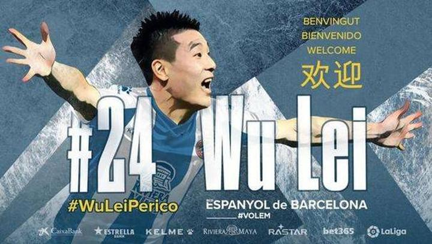

懂球帝首页>足球新闻> 中日韩对比，我们的足球是否最没地位？
中日韩对比，我们的足球是否最没地位？
内德 01-03 22:00
2020年，注定又是个被日韩足球喂柠檬的年度。孙球王依然闪耀白鹿巷，黄喜灿可能上演饿狼传说，南野拓实即将迎来利物浦首秀，而西甲的李康仁vs久保健英更是能确保未来十年的柠檬销量。与此同时，我们的武磊虽然在西班牙人成为了“四朝元老”，热度却进一步下降。
在国内，这注定是个足球明星拼不过流量明星、足球综艺火不过篮球综艺、足球市场没法和爱豆抗衡的时代。那么让我们羡慕的日本和韩国，足球到底有什么样的社会地位？
【日韩：别跟我提爱豆，我要看足球！】
作为一个造星业极为发达的国度，韩国每年都能出产大量的艺人。在SM公司等一系列造型工厂的努力下，进入娱乐圈已经成为韩国一个非常普通的职业，甚至在大街上，你随便遇上一个人就可能是练习生。
然而，与中国那种全民追爱豆的热潮不同，韩国娱乐明星的社会地位并不高。如果把韩国娱乐明星的影响力做个排名，基本上是搞笑艺人<爱豆<电视剧演员<电影演员<电影导演，爱豆处于一个赚钱少、受尊敬指数并不高的地位，远不如电影界的大咖。
虽然足球的热度在韩国国内略低于棒球，但是孙兴慜却属于民族英雄那一挂的。在韩国，孙兴慜有自己专门的supersonTV，是千万妹子的梦中情人。上赛季的欧冠决赛，有大约2200万韩国民众观看，约占韩国总人口的46.2%。
除了孙兴慜之外，李康仁、黄喜灿等优秀足球运动员的知名度虽然不如顶级流量爱豆，但是国民心中地位却是吊打的。比如韩国国家队如果在奥运会集体项目上获得前三，或者在亚运会上夺得冠军，上过场的球员都能被免除两年的兵役。但如果娱乐明星想免除兵役，基本只有一条路可走，那就是：“首长，我有病。”
而在日本，历史和文化原因使得棒球和相扑成为日本国民最为推崇的两项运动，但足球依然有着很高的地位。在日本球员发挥出色的2012年，日本公布的名人榜前五位分别是本田圭佑、キンタロー、林修、福山雅治、香川真司，足球以碾压性优势领先于其他竞技体育项目，也足以和娱乐圈大咖分庭抗争。
很明显，现如今在我国足球并没有资格和娱乐圈的大佬们打擂台。虽然我们的小鲜肉大部分都是属于“三月可出栏，三年过百万”那一挂的速成品，但他们的追随者仍然比足球明星大N个数量级。
除了武磊登陆西甲这种爆炸新闻，我们的足球想上个热搜，要么需要国足惨败，要么需要鹿晗同学的帮衬……
【日韩：别跟我抢电视，我要看足球】
从天盛的倒塌到电竞直播的碾压，无数的事实残忍的告诉我们：中国其实并没有那么多的足球迷。
《nielsensports》发布的2018年世界足球报告显示，对足球感兴趣的人口，中国从2013年的27%增加到2017年的32%，印度从30%增加到45%，美国从28%到32%。巴西由于在2014年世界杯上的惨败，导致对足球感兴趣的人口从2013年的72%，到2017年间降至60%。
而日韩足球又是什么光景呢？
——对足球感兴趣的人口，日本42%，韩国67%。
虽然统计显示中国足球迷人数达到1.87亿，但实际的收视率其实远没有那么乐观。
CCTV5国足历史上的最高收视率的比赛你猜是哪一场？
国足五里河出线？还是国足在世界杯首战哥斯达黎加？
都不是。
至今有数据可靠的国足收视冠军，其实是国足历史上最大的冤案——2004年的北京亚洲杯决赛，国足1比3负于日本无缘冠军，当时日本靠一个争议手球反超的比分。根据统计，这场比赛在央视的收视率达到了18.5%。而排名第二的比赛，是2002年世界杯中国和巴西的小组赛，收视率达到了14.4%。
(图)亚洲杯决赛上日本疑似手球
这就是现实，中国足球收视率最高的比赛也未能超过20%。而在日韩，除了刚才提到的孙兴慜欧冠决赛吸引了46.2%的韩国民众观赛之外，日本的收视数据更是夸张。
——2002年世界杯首轮日本队1比0战胜俄罗斯的比赛，创造了日本足球历史上的最高收视率，达到了惊人的66.1%。
——1998年日本首次征战世界杯，对阵克罗地亚和阿根廷，收视率分别达到了60.9%和60.5%。
——截止2018年世界杯，日本队共参加了19场比赛，收视率超过50%的比赛达到了7场。
——2018年世界杯日本首轮和哥伦比亚的对战，以55.4%收视率拿下日本体育界年度收视冠军，数据完爆收视之王羽生结弦。

也许，另一项数据更能说明问题。
根据《亚洲时代报》报道，2018年日本击败哥伦比亚的那场比赛中场休息时，东京的用水量激增了24%。因为大家生怕错过比赛，所以在上半场都憋着没去卫生间。于是，从第二场比赛开始东京市政府就调整了全市的供水，以满足大家急切的膀胱……
中国的球迷究竟有多少？其实，和日韩的收视率对比就已经说明一切。

【日韩：别跟我谈理想，我要成为足球运动员】
一个著名的问答网站曾经抛出过一个血淋淋的问题：如果你有孩子，会让他去踢职业足球吗？
大多数为中国足球垂头顿足的球迷在这时表现出了空前的一致，答案就俩字：不会。
原因并不难理解。高考是通往成功的康庄大道，相比之下，职业足球可谓路漫修远道阻且长。一旦确立了“课业和足球很难德艺双馨”这个大前提，踢球二字在父辈心中就会变成洪水猛兽。于是，球星都是电视上的，偶像都贴在墙上，孩子们能做的只是拿出放学之后的须臾时光去渣土地上奔跑或者和广场舞大妈为了地盘你争我抢……
而在日韩，却是另一番光景。
2018年韩国小学生职业理想统计显示，韩国孩子的第一职业理想是成为足球运动员，第二职业理想是成为教师。日本学研教育综合研究所今年8月发布的《小学生白皮书》调查显示，日本小学男生最理想的职业是YouTuber等网络UP主，第二名则是足球运动员。
事实也是如此。
1996年，日本足球提出了足球百年计划，这份计划包括2015年男足要成为世界前10，2050年足球人口1000万，日本足协的草根计划每年投入300万美元等诸多内容……这长达1000页的规划看似目标遥不可及，但如今其中的内容有很多已经实现。日本足协缴费登记的登记人口超过130万人，备案足球从业者人数超过600万，青少年足球选手达到60万人。与之对比，2016年在中国足协注册的男子职业球员只有1853人，而备案的业余球员数量也只有55605人。
苗子数量不给力，师资力量差距更是恐怖。
33万人口的冰岛，有近600个拥有欧足联B级以上证书的教练，其中A级证书教练近200人；足球强国德国，拥有28000多名拥有B级证书的教练、5500多名A级证书教练；英足总专门聘请了几百名足球教练，免费教5-11岁的孩子踢球；日本足协目前拥有持证教练的人数为6.3万名，其中5.8万名是专门从事青少年培养工作的D级和C级教练员……而中国，D级和C级教练员的人数仅为日本的1/7。
在中国，即便足球少年抱着一颗向往职业足球的赤子之心，他也要克服身前的重重大山、无处学艺的苦闷，以及，经济上的巨大压力。

【日韩：别跟我谈钱，我要踢足球】
中国足球最大的竞争力，大概也只有收入了。
——根据《soccer-money》数据统计，2019年J联赛球员平均年收入为3504万日元，折合人民币约为227万元。如果除去伊涅斯塔（2亿人民币）、托雷斯（5000万人民币）、波多尔斯基（4100万人民币）的数据再进行统计，J联赛的人均年薪大概只有176万人民币。
——根据韩国公布球员的薪水数据，2019年韩国K联赛球员的平均年薪为122万元人民币，最高年薪是金信煜984万元人民币。
——2019年中超球员的平均薪资为710万元人民币，最高年薪是上港外援奥斯卡2400万欧元。放眼全球，中超联赛球员的平均收入在世界所有体育联盟中排第11位，在足球联赛中仅次于欧洲五大联赛。
那么，我们的工资帽政策……是不是就可以理解了？
事实就是如此，邻村的孩子去城里读书了，隔壁的孩子已经考研了，我们家的孩子还在幼儿园留级，结果我们家花钱还最多。
其实，中国足球职业化之后我们在软硬件配置、赚钱能力、国际影响、俱乐部成绩方面都在打着滚追赶世界先进水平。武磊加盟一个月后，西班牙人俱乐部大股东的公司市值暴涨了26.2%；推特关注人数翻了两番；比赛观赛人数从十万级涨到千万级；球衣销量过万，相关衍生产品给球衣赞助商带来百万欧元的流水；国内掀起遣词造句高潮，闻“机”起“武”、战“武”不胜、“武”与伦比、奋“武”扬威……汉语的博大精深在武磊身上得到了充分发挥。
我们毫不怀疑，如果中国足球能出几个像孙兴慜这样的大咖，我们足球的地位、影响力、吸金能力、职业选择率、球迷的遣词造句花样夸能力都会大幅度上升。

所以，与中日韩对比，我们的足球是否最没地位？
是的。
但是，想想我们的女排是什么地位？想想李娜回乡时的接见段位？想想刘翔站在起跑线前的热度？想想2003到2009年，学生食堂的电视机前，里三层外三层围着看那个2米26大个子比赛的情景？
所以，菜是原罪。
消息参考来源: 懂球帝
严禁商业机构或公司转载，违者必究；球迷转载请注明来源“懂球帝”


 相关新闻
相关新闻
白岩松：如果失败是成功之母，那么中国足球的妈就太多了
01-03 17:05“铁达尼号”国足起航，未来到底能走多远？
01-03 17:03U18国家女足集训队集训名单 ：江苏12人入选
01-03 09:27加尔蒂耶回应皇马看上里尔队员传闻：媒体说的事我不感兴趣
01-04 10:14愿新年，胜旧年！2019绿地申花青训梯队年终总结三
01-04 01:20阿斯：想在冬窗送走马里亚诺，皇马愿意帮下家承担部分工资
01-04 11:14巴萨加泰德比名单：特尔施特根伤缺，法蒂、比达尔入选
01-04 03:05单赛季丢72球；执教球队时场均丢球比历任主帅，包...
01-04 08:16实况教练模式预演：现实版加泰罗尼亚德比武磊表现如何？
01-04 08:18
辉龙soccer66
2020-01-03 22:09:26
2154
问日本不太看球的民众，你知道本田圭佑吗？哦，当然日本国家队王牌嘛
问韩国不太看球的民众，你知道孙兴慜吗？
哦，那个在英格兰踢球很厉害的小伙子
问中国不太看球的民众，你知道武磊吗？
哦，当然。吴磊他演技挺好的
奉天巡防队统领
2020-01-03 22:09:55
1129
内德大大这样的态度才是正确的。
现在我们D站的舆论，颇有一种“年轻人喜欢游戏多过足球就是错”，“足球不受社会重视，没有群众基础就是错”，“社会喷足球是错，足球没地位也是错”的左倾倾向。
就好像大环境有问题，只有足球冰清玉洁一样。
我们国家创造了举世瞩目的经济奇迹，已经成为世界最有影响力的大国之一。我们的社会，即便不能说尽善尽美，也一定有它的可取之处。什么问题都让社会背锅，真的很没意思。
面对“足球差，没关注度，娱乐和电竞才更受中国年轻人的喜爱”的事实，并想办法改变它。这才是中国的足球从业者应该做的。而不是，“看看日韩的年轻人！我们的年轻人已经输在了起跑线，长此以往中国必定会崩溃！”这样公知一般的无能狂怒型言论。
中国的年轻一代是有前途的，而这个前途并不一定需要足球的参与。中国足球需要思考的，是如何搭上年轻人业余生活的这趟车，而不是被这个时代所抛弃。
乔丹丨亨德森

2020-01-03 22:01:47
513
自信点，把是否去掉
弗拉基米洛维奇
2020-01-03 22:32:19
369
来了大学，看个国足和做贼一样，得偷偷摸摸的在手机上看，还不能让别人在你背后看到你在看国足。
看英超，人家问你在看什么，我说英超，“哦。”
看国足，人家问你在看什么，我说国足，“国足那么垃圾你也看，你是个傻x吧。”
我无法让他们理解，我看国足不是为了看足球，只是为了看“中国”。
多木齐一户
2020-01-03 22:44:01
269
中国是一个金牌大国，体育小国
胡志
2020-01-03 23:36:43
235
说来奇怪：
真心以女排为荣，但女排夺冠的比赛没看过；
真心敬佩姚明，但NBA的比赛看着就想睡觉；
真心为刘翔激动过，但看他比赛却寥寥无几；
真心鄙视中国男足，但国家队比赛一场不落，全他妈看了，都是直播，***！
一头倔强的牛NWK
2020-01-03 22:19:11
218
中国足球的问题和中国社会的问题挺像的。经济还没有成为发达国家，就已经出现了很多发达国家所存在的问题，发展动能枯竭，触碰到了天花板。因为发展的问题只能用发展来解决，如果无力发展，那么即成恶性循环。越无力发展，问题越多，问题越多，越无力发展。中国足球也一样，尚未成为亚洲强国，社会舆论的忍耐度就已经到了极限。因为足球的问题只能靠群众基础来解决。而群众基础已经到了极限，所以即成恶性循环。踢得越差，越没社会关注度。越没关注，踢得越差。
加泰罗尼亚的遛狗大队队长
2020-01-03 22:26:55
191
本人高中生

家长都认为踢球就耽误学习
考得差就是因为踢球
殊不知，不踢球我考的也差
海蓝771
2020-01-03 22:33:39
183
有，我们足球在中日韩三国当然有地位，第三位。。
绵正鹤
2020-01-03 22:04:23
83
所以以后别动不动说中国电影被韩国带偏娘娘腔，韩国人真正喜欢的是河正宇这种类型，退一万步，哪怕是一些爱豆，他们也都是有真才实学的，因为淘汰速度比较快，还必须当兵，对人外形和思想改变很大
姜比你们辣2
2020-01-03 22:58:00
82
中国球迷没有几个爱足球，有些甚至还不如场上球员爱足球，为何这么说，一些欧洲超低级别球队进一个球能让整个城市高兴一周，而让中国球迷高兴一周的新闻只有进世界杯，进奥运会，足球是圆是方跟我们没关系，成绩才是我们追求的，这就是中国人。有些人说，国足成绩不符合中国的大国形象，论人口，印度人从没说过13亿印度人没有会踢球的，论国家实力，美国人从没说过自己在乒乓球上必须拿到冠军，中国人什么都要拿冠军，当成绩不符合标准时，自然有很多人去骂国足，这就是中国。
曼市魔鬼
2020-01-03 22:26:20
67
有人说，十五亿中国人找不出来11个踢球的，但我想说的是，这就像从职业军人里挑选特种部队，首先你得是职业的，中国虽然人口基数是日韩的十数倍，但是每年注册的职业球员缺少的可怜，只有日韩的几千分之一，这不是人多就会力量大的道理，而日韩球星不断涌现也绝非偶然，甚至咱们的某一时间段的足球人才处于断层，郝海东、孙继海、李金羽、范志毅、郑智....这些中国足球响当当的名字至今依然是最响亮的，借用一位球迷的话讲：我们本以为那是起点，不料却是巅峰！中国足球，依然还有很长的路要走。
水音
2020-01-03 22:23:00
53
写的都挺好，不过还是说一句公道话，拿足球明星和流量明星比没任何意义，国内的影视娱乐环境也根本比不过日韩，不要经济不景气动不动就拿气撒娱乐明星身上，整个影视行业现在也是一潭死水。把实体经济人均福利政策搞上去才是硬道理，不然就算满大街的足球场，也很少人会选择足球这种靠吃青春饭且受伤或是退役后得不到任何保障的职业。